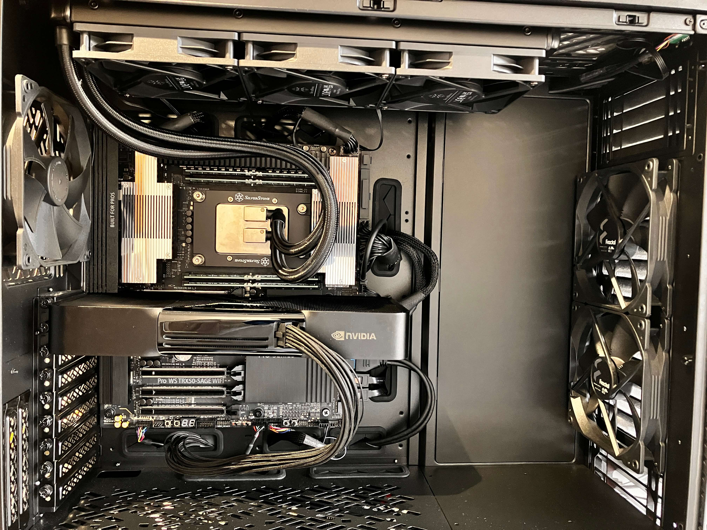
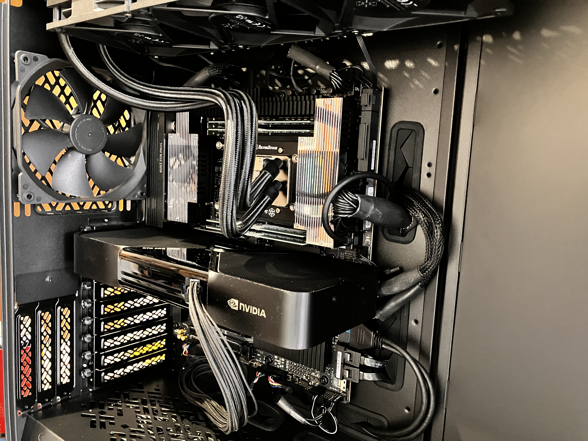
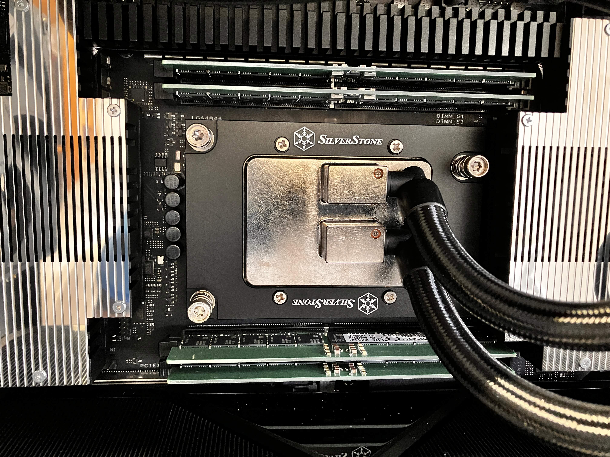
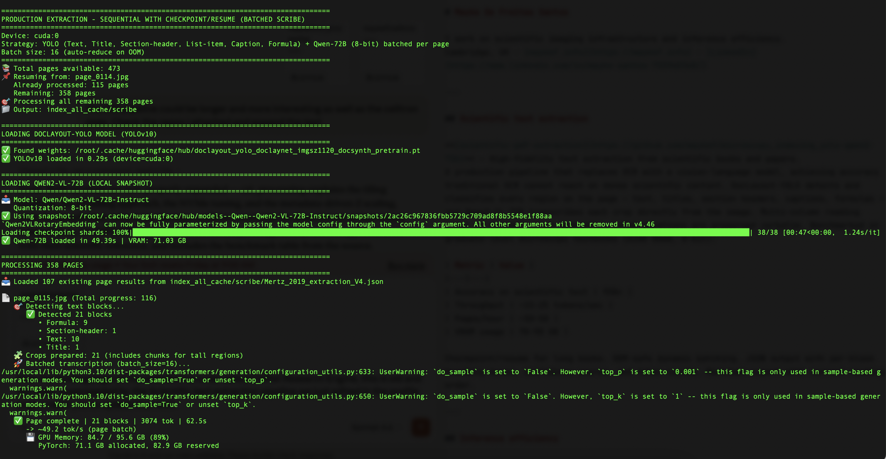
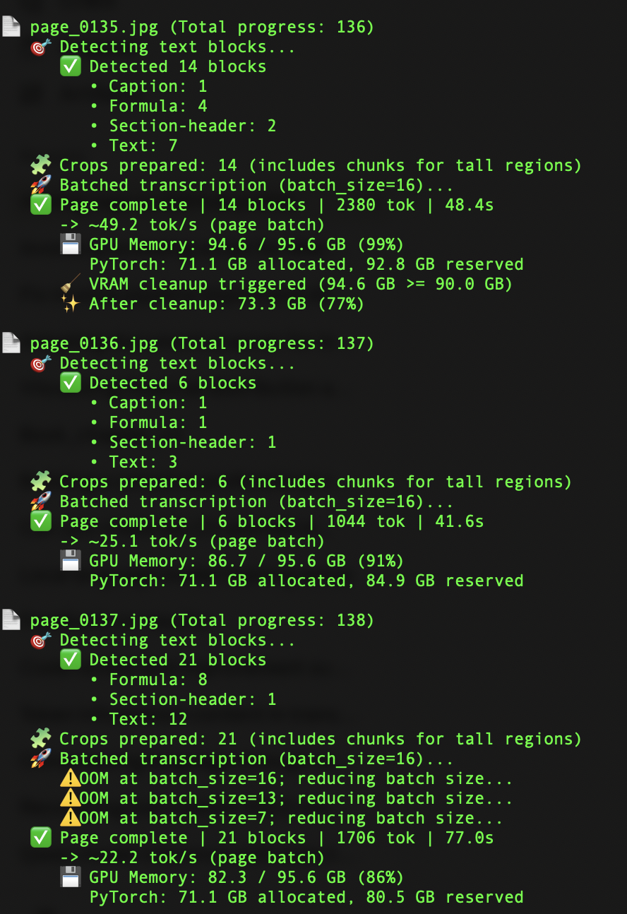

This page shows what I am working on at the moment.
Single-Tower High-Performance Rig
While most people drop thousands of £GBP on a depreciating Audi Q3 that loses value the moment they drive it off the lot (or worse, they lease it), I'd rather sink that money into something that can actually produce interesting things. This machine currently runs 70B+ parameter models locally and processes terabyte-scale microscopy datasets. The full build-out to three GPUs and 1TB of RAM will generate value every day and stay relevant as I upgrade components.
The core philosophy here is modularity without compromise. The Threadripper 7970X gives me 48 PCIe 5.0 lanes, meaning I can run three flagship GPUs at full x16 bandwidth without needing £GBP thousands more on a dual-socket EPYC or enterprise Xeon platform. The ASUS Pro WS TRX50-SAGE has IPMI and ECC support, so this isn't just a gaming rig with delusions of grandeur—it's production-grade infrastructure.
This started as a microscopy research platform. I needed something that could crunch through days of high-resolution imaging data while simultaneously running LLM inference for automated experimental workflows. Turns out, the Venn diagram of "can process microscopy data" and "can run massive language models" is just "absurdly powerful computer."
ECC memory isn't negotiable. When you're running multi-day experiments or training on scientific data, a single bit flip can corrupt everything. The 128GB DDR5 ECC setup expands to 1TB because why set artificial limits?
The 96TB ZFS pool means I can stop worrying about cloud storage costs and actually work with real datasets locally. Checksumming, snapshots, data integrity—all the things you want when your data represents months of work.
The RTX 6000 Blackwell (96GB VRAM) is cutting-edge enough to stay relevant as models get bigger, and when I need more, I'll just add two more GPUs. 288GB total VRAM in a single tower. No racks, no datacenter, no monthly AWS bills making me cry.



| Sub-system | Component | Rationale |
|---|---|---|
| CPU | AMD Threadripper 7970X | 32 cores, 48 PCIe 5.0 lanes. |
| GPU | NVIDIA RTX PRO 6000 96GB | Blackwell architecture for large-scale compute. |
| RAM | 128 GB DDR5-4800 ECC | RDIMM; Expandable up to 1TB. |
| NVMe OS | Crucial P2 1TB | Dedicated OS drive. |
| NVMe Scratch | Samsung 9100 Pro 8TB | 8TB scratch storage for active datasets. |
| Bulk Storage | 96TB ZFS Pool | 4x Seagate IronWolf Pro 24TB drives. |
| Motherboard | ASUS Pro WS TRX50-SAGE | IPMI and ECC support. |
Scientific PDF Extraction Pipeline
A production pipeline for extracting high-fidelity text from scientific books and papers — without OCR. Traditional OCR collapses on the content that matters most: multi-column layouts, inline LaTeX equations, figure captions interleaved with text, and dense technical notation. This pipeline bypasses that entirely by treating each page as an image and using a vision-language model to read it directly.
microscopy_indexing_yolo-qwen2-72b ↗
DocLayout-YOLO (YOLOv10, trained on DocLayNet) runs first and classifies every region on the page into six content classes: Text, Title, Section-header, List-item, Caption, and Formula. Each detected region is cropped and passed individually to Qwen2-VL-72B, which transcribes the image directly. Tall blocks are chunked vertically before inference and reassembled afterward. Multi-column reading order is reconstructed from bounding box X-coordinates — left column top-to-bottom, then right column.
The extraction loop writes a checkpoint after every page. If the process is interrupted — OOM, power loss, deliberate pause — re-running the script picks up exactly where it left off. Batch size is reduced automatically on OOM and cautiously ramped back up on recovery. VRAM is monitored via pynvml against a configurable threshold; cleanup runs at page boundaries, not per-block, which is a meaningful throughput win on 72B models.


| Metric | Value |
|---|---|
| Accuracy | 95%+ on scientific text |
| Throughput | ~15–25 tokens/sec |
| Pages/hour | ~30–50 (density-dependent) |
| VRAM usage | 70–90 GB (8-bit quantisation) |
| GPU target | A100 80GB / RTX 6000 96GB |
./manage_env.sh
# Rasterise PDF to images
python pdf_to_images.py document.pdf --dpi 200
# Run extraction (resumes automatically on restart)
python text_extraction_sequential.py
# Export to Markdown
python json_to_markup.py output.json -o output.md
| Stack | Technology | Role |
|---|---|---|
| Environment | CUDA 12.6 · Docker | PyTorch nightly, flash-attn 2.8.3 pinned for Blackwell. |
| Layout model | DocLayout-YOLO (YOLOv10) | Detects and classifies page regions at 1120px imgsz. |
| Transcription | Qwen2-VL-72B (8-bit) | Vision-language transcription per detected crop. |
| Output | JSON + Markdown | Per-block bbox, confidence, token count, reading order. |
Procurement strategist with deep expertise in complex scientific and technical categories, built through senior roles at the University of Cambridge. Designed and led category strategies across £11M in annual spend, delivered £25M+ in high-value tenders, and built supplier frameworks from greenfield across imaging, optics, and laboratory gases. Unusually, I understand the science behind what I buy: I have hands-on experience with the instruments, the data they generate, and the infrastructure needed to process it. This enables faster market analysis, sharper supplier evaluation, and better outcomes for technically demanding clients.
↓ Download CV- Delivered £220K early savings (2%) across laboratory equipment categories by aggregating spend and centralising supplier relationships — with a roadmap to a further 5%.
- Led 14+ high-value tenders totalling £25M+, including Wind Tunnel (£3M), Rotating Rig (£3M), Lab Equipment (£750K), and AV Systems (£1.2M) for world-class research facilities.
- Designed and administered the University of Cambridge Laboratory Confocal Microscope Framework — a pre-agreed supplier structure that reduced procurement burden on research staff across multiple departments.
- Built long-term category strategies for Laboratory Gases (£2M), Optics (£5M), and Imaging (£4M) from scratch in a greenfield procurement environment.
- Negotiated major contracts in technically sensitive categories including lab gases (£3.2M) and specialist rotating equipment (£3M) with zero prior frameworks in place.
Lead strategic procurement for three specialist categories with £11M combined annual spend, partnering directly with scientists, professors, and research infrastructure teams.
- Developed long-term category strategies for Imaging (£4M), Optics (£5M), and Laboratory Gases (£2M) — establishing market intelligence, supplier landscapes, and multi-year sourcing plans.
- Co-created and administered the Confocal Microscope Framework Agreement, streamlining access for research teams and embedding pre-negotiated commercial terms across the supplier base.
- Achieved 2% category-wide cost savings by centralising demand and aggregating supplier relationships; identified pathway to further 5% reduction.
- Produced advanced spend analytics and market visualisations using Python — enabling data-driven category decisions beyond standard procurement reporting.
- Embedded as a trusted advisor to scientific stakeholders — translating complex technical requirements into commercial strategy and supplier briefs.
Led end-to-end procurement for major capital and infrastructure projects across Science, Engineering, Chemistry, and Physics faculties.
- Managed 14+ tenders valued at £25M+, including the UK National Centre for Propulsion and Power (Whittle Laboratory) and the New Atria Building (Heart & Lung Institute).
- Negotiated contracts across technically complex categories: Wind Tunnel (£3M), Rotating Rig (£3M), Lab Gases (£3.2M), Lab Equipment (£750K), AV Systems (£1.2M).
- Built relationships with academic and scientific stakeholders to translate research requirements into fit-for-purpose procurement specifications.
- Supported procurement across FM, ICT, and clinical categories; contributed to the rollout of three major procurement frameworks.
- Led bid evaluation and tendering processes reporting to the Head of Corporate Services.
- Managed complex contract administration and supplier performance monitoring for major public sector contracts.
- Delivered process improvements saving approximately 300 staff hours through optimised contract and PO procedures.
- ICT procurement and contract management for critical police technology systems (£20M annual budget).
- Led international procurement for product development; negotiated contracts with UK and Chinese manufacturers.
- Achieved £400K+ in cost savings and secured initial contracts with Brazilian customers.
Managed international conservation programmes across South America. Led cross-border stakeholder engagement, grant management, and project delivery in complex, low-resource environments.
Alongside procurement work, I maintain active research and engineering projects in inference efficiency and scientific imaging infrastructure — areas directly relevant to technology and life sciences procurement mandates.
- Python data analysis (Pandas, Matplotlib, Plotly) — used in production for spend analytics, category reporting, and supplier market modelling.
- Scientific imaging infrastructure: designed and built processing pipelines for 200GB+ Zeiss confocal datasets (OME-Zarr, parallel stitching, NVMe-optimised I/O).
- LLM inference research: developed forge-edge, a Shannon-grounded inference optimisation system achieving 1.18× speedup on 14B parameter models with zero quality degradation.
- Operates a local HPC workstation (Threadripper 7970X, RTX PRO 6000 96GB, 96TB ZFS) — practical familiarity with the infrastructure procurement clients in research and deep tech are acquiring.
| CIPS Level 4 Chartered Institute of Procurement & Supply | Completed |
| Masters in Conservation Leadership University of Cambridge | |
| LLM in International Environmental Law SOAS – University of London | |
| Degree in Law Universidad Santa María, Venezuela |